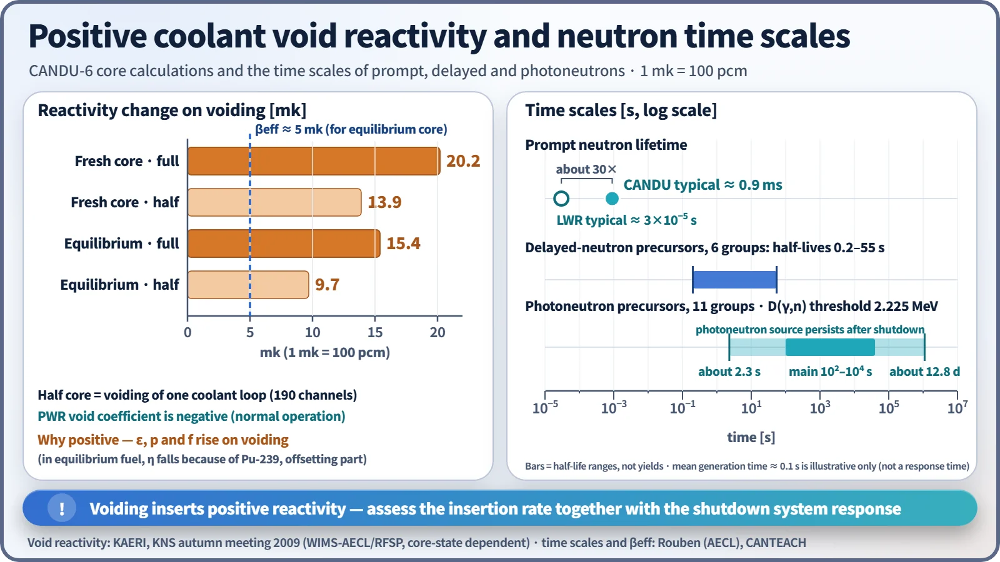
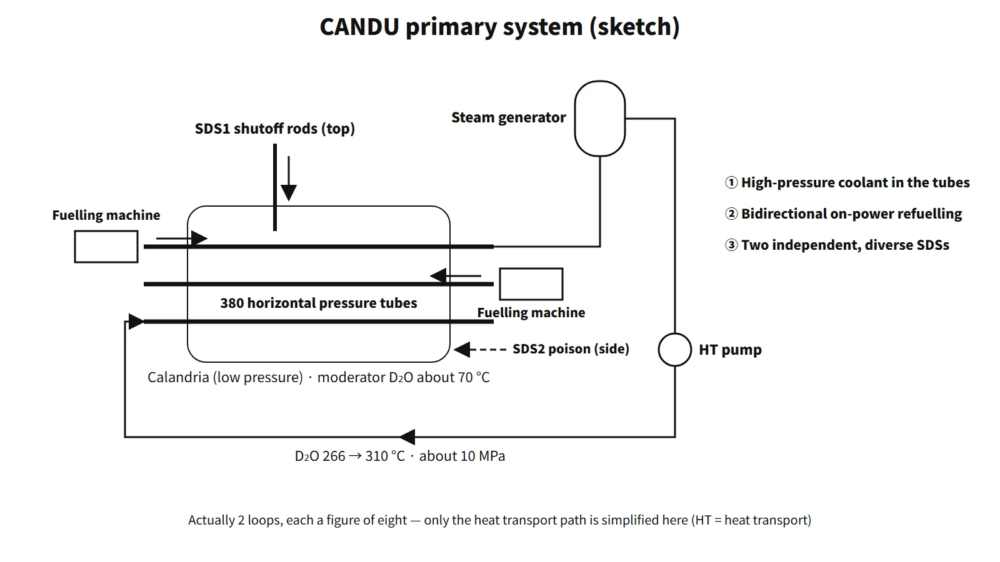

Policy, Economics & Reactor Types · C-PE-005
Pressurized Heavy Water Reactor (PHWR/CANDU) Characteristics — Pressure Tubes, Natural Uranium, On-Power Refuelling and Positive Void Reactivity
Why heavy water allows natural uranium, why CANDU refuels on power, and how a positive void coefficient is handled with two independent shutdown systems.
A pressurized heavy water reactor (PHWR) uses heavy water (D₂O) as moderator and coolant and places the fuel in horizontal pressure tubes, which carry the coolant pressure. The reference design, CANDU-6, is characterized by natural uranium fuel, a cool, low-pressure moderator (calandria), on-power refuelling and two independent, diverse shutdown systems.
In one sentence: "A pressure-tube reactor moderated and cooled by heavy water; thanks to the high moderating ratio of heavy water it uses natural uranium and stays critical by on-power refuelling."
Principle and mechanism
Structure — pressure tubes, calandria and bidirectional fuelling machines
![CANDU-6 core: side view of the calandria with moderator D2O at about 70 C and low pressure, horizontal fuel channels fuelled from both ends by fuelling machines in the direction of coolant flow (opposite in neighboring channels) and SDS1 shutoff rods dropping from above; front view with SDS1 vertical and six SDS2 horizontal nozzles; a cutaway fuel channel showing the gas annulus, calandria tube, Zr-2.5Nb pressure tube and 37-element bundle about 0.50 m long; and a channel cross-section with a lattice pitch of 28.575 cm. Coolant inlet header 266 C and 11.75 MPa(abs), outlet header 310 C and 10.0 MPa(abs); 380 channels times 12 bundles = 4,560 bundles of natural UO2](../../assets/images/concepts/c-pe-005-phwr-candu/fig1-candu-core-layout.webp)
- The high-pressure coolant inside the core is contained in 380 pressure tubes (Zr-2.5Nb). The full primary pressure boundary also includes the end fittings, feeders, headers and the steam generator primary side. The D₂O coolant runs in two loops, from the inlet header at 266 °C and 11.75 MPa(abs) to the outlet header at 310 °C and 10.0 MPa(abs).
- Outside each pressure tube, an annular gas gap and a calandria tube (Zircaloy-2) insulate it from the moderator. The moderator is at about 70 °C and near atmospheric pressure, so the reactivity devices sit in a low-pressure environment and rod-ejection accidents are ruled out by design.
- Each channel holds 12 37-element bundles (49.53 cm long). The fuel is natural UO₂ (U-235 0.711 wt%), and the discharge burnup is about 7,500 MWd/tU.
- The thermal output is 2,064 MWt (heat transport system) and the gross electrical output is about 680–715 MWe depending on the unit (efficiency about 33 %). About 5 % of the fission power is lost as heat in the moderator.
Natural uranium is possible because of the moderating ratio. Thermal-neutron absorption in D is about 1/640 of that in H, so the moderating ratio of heavy water is tens of times that of light water.
On-power refuelling — why, and what is gained and lost
Natural uranium has little excess reactivity. A long cycle therefore cannot be supported with built-in excess reactivity or burnable poisons, and criticality is maintained by adding a little new fuel every day. One fuelling machine pushes new bundles into a channel in the direction of coolant flow, and the fuelling machine at the other end receives the irradiated bundles pushed out. Each visit replaces 4 or 8 of the 12 bundles; neighboring channels have opposite flow and are therefore fuelled in the opposite direction (bidirectional). The equilibrium refuelling rate is about 16 bundles per full-power day. If refuelling stops, reactivity falls by about 0.4 mk per full-power day.
| Advantages | Disadvantages |
|---|---|
| No refuelling outages, so higher capacity factor | Two fuelling machines are complex, expensive and maintenance-heavy |
| Small excess reactivity → margin against reactivity accidents, no poison needed | Repeated opening of high-pressure channels → leakage and D₂O loss management |
| Defective fuel removed during operation | Low burnup means a large mass of spent fuel (about 1/6–1/7 of PWR burnup) |
| Power distribution adjusted by channel choice | Core always accessible → heavier safeguards (accountancy) surveillance |
Even so, natural uranium consumption per unit of thermal energy is about 28 % lower than for a PWR (assuming 4.5 wt%, 50 GWd/tU and 0.25 % tails).
Reactor physics — positive void reactivity and a long prompt neutron lifetime

Because the coolant is separate from the moderator and the lattice is well moderated, losing coolant raises reactivity. Fast neutrons no longer collide with coolant, so the fast fission factor ε rises; resonance absorption near the fuel falls, so p rises; and coolant absorption disappears, so f rises. In equilibrium fuel, Pu-239 makes η fall, offsetting part of this.
- Core calculations (one published study, 2009): the reactivity change on voiding is 9.7 mk for the half core and 15.4 mk for the full core of the equilibrium core, and 13.9/20.2 mk for the fresh core (1 mk = 100 pcm). The half core corresponds to one coolant loop (190 channels).
- βeff for equilibrium fuel is about 0.5 % (5 mk), smaller than 0.0065 for U-235 alone.
- In return, the prompt neutron lifetime Λ ≈ 0.9 ms, about 30 times longer than in a light-water reactor. Eleven groups of photoneutron precursors produced by the D(γ,n) reaction in heavy water (threshold 2.225 MeV), with half-lives from about 2 seconds to 12.8 days (main components hundreds to tens of thousands of seconds), are added, so the weighted mean generation time including delayed neutrons is about 0.1 s. The neutron level persists long after shutdown. The 0.1 s is an illustrative weighted mean, not an accident response time.
The full-core void reactivity exceeds βeff, and a large LOCA is the accident that gives the shutdown systems their largest positive reactivity insertion rate. Safety is therefore demonstrated by analyzing the insertion rate together with the shutdown system response, and two fast, mutually independent shutdown systems are provided.
If light water gets into the core
- Into the moderator (heat exchanger leak, etc.): the strong absorption of H makes the moderating ratio drop sharply, inserting a large negative reactivity. At about 0.19 at% H the moderating ratio is halved. Power goes down and fuel economy suffers.
- Into the coolant: the CANDU-6 ECC supplies light water by design (high-pressure ECC tanks → medium-pressure dousing tank → low-pressure recirculation). When light water refills voided channels, the reverse of voiding plus H absorption reduces ε, p and f, giving negative reactivity. Its magnitude depends on the core state, so it is described qualitatively.
What it means in a plant
Reactivity control and shutdown
Normal regulation uses 14 light-water zone control compartments (about ±3 mk), 21 adjuster rods (about 15 mk), 4 mechanical control absorbers and moderator poison (boron in the initial core, gadolinium after shutdown). Unlike a PWR, no boric acid is dissolved in the coolant.
Shutdown is provided by SDS1 (28 cadmium shutoff rods dropping from above) and SDS2 (high-pressure injection of gadolinium nitrate into the moderator through 6 horizontal nozzles). The two systems are independent of and diverse from each other and the regulating system, and each uses three-channel logic.
Special safety systems and two-group separation
The safety functions are shut down, cool, contain and monitor. The special safety systems are SDS1, SDS2, ECC and containment; the systems that supply them with power, instrument air and cooling water are the safety support systems.
| Function | Group 1 | Group 2 |
|---|---|---|
| Shutdown | Reactor regulating system, SDS1 | SDS2 |
| Fuel heat removal | Heat transport, feedwater, shutdown cooling, ECC, moderator | Emergency water supply (EWS) |
| Containment | Reactor building air coolers | Containment and its subsystems |
| Monitoring and control | Main control room | Secondary control area (SCA) |
| Support systems | Class IV, III (diesel), II and I power; raw and recirculated cooling water; instrument air | Emergency power supply (EPS), Class II and I; EWS; local air tanks |
Placing the two shutdown systems in different groups ensures that a single event cannot disable shutdown, and placing ECC and containment in different groups ensures that fuel damage and release cannot occur together from a single event. Outside the reactor building, the two groups are in different areas (usually 90° apart), and EPS and EWS are in separate buildings.
Tritium and heavy-water management
The D(n,γ)T reaction produces a lot of tritium. UNSCEAR 2000 normalized releases are 670 TBq/GWe·year for heavy-water reactors and 21.4 for PWRs, about 31 times more. Some PHWR sites operate tritium removal facilities.
Regulatory and design criteria
For example, in Canada, where the CANDU design originated:
- The former AECB regulatory documents R-7 (containment), R-8 (shutdown systems) and R-9 (ECCS) are 1991 editions, and R-10 (use of two shutdown systems) is from 1977. The shutdown-system requirements of R-8 and R-10 were consolidated into CSA N290.1. Requirements for new designs are in CNSC REGDOC-2.5.2 (2014, replacing RD-337).
Easily confused pairs
| Item | PWR (APR1400 example) | PHWR (CANDU-6 example) |
|---|---|---|
| Moderator and coolant | H₂O serving both | D₂O, moderator separate (cool, low pressure) |
| Containing the high-pressure coolant in the core | Reactor pressure vessel | 380 horizontal pressure tubes |
| Coolant | 15.5 MPa, 290.6→323.9 °C | 11.75→10.0 MPa(abs), 266→310 °C |
| Fuel | Enriched UO₂ 4–5 wt%, 241 16×16 assemblies | Natural UO₂, 4,560 37-element bundles |
| Burnup | About 45–55 GWd/tU | About 7.5 GWd/tU |
| Refuelling | At shutdown (about 18-month cycle) | On power (about 16 bundles per day) |
| Reactivity control | Control rods + boric acid | Zone control, adjuster rods, MCAs, moderator poison |
| Shutdown | Control rod drop | SDS1 shutoff rods + SDS2 poison injection |
| Void coefficient | Negative | Positive (equilibrium full core about 15 mk) |
| Prompt neutron lifetime | Order of 10⁻⁵ s | About 0.9 ms |
| Tritium release | 21.4 TBq/GWe·year | 670 TBq/GWe·year |
The calandria is a low-pressure tank, not a pressure vessel. The positive void coefficient is a design characteristic whose safety is demonstrated by compensating with small excess reactivity, a long Λ and independent shutdown systems.
Key points at a glance
- Definition: horizontal pressure-tube reactor moderated and cooled by heavy water; CANDU-6 thermal output 2,064 MWt.
- Natural uranium: high D₂O moderating ratio → U-235 0.711 wt% used as is, no enrichment needed.
- Pressure tubes and calandria: high-pressure coolant inside 380 pressure tubes; moderator separate at about 70 °C and low pressure.
- On-power refuelling: small excess reactivity → fuelling in the direction of coolant flow, opposite in neighboring channels, about 16 bundles per day.
- 37-element bundles: 12 per channel, burnup about 7.5 GWd/tU → large amount of spent fuel.
- Reactivity characteristics: positive coolant void reactivity (equilibrium full core about 15 mk), Λ ≈ 0.9 ms, photoneutrons.
- Two shutdown systems: SDS1 with 28 shutoff rods (from the top), SDS2 gadolinium injection (from the side), independent and diverse.
- Two-group separation: G1 (SDS1, ECC) / G2 (SDS2, containment, EPS, EWS, SCA).
- Tritium: D(n,γ)T, releases about 31 times those of a PWR → removal facility.
